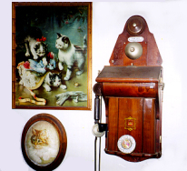

Japanese Program Fee - 2013
(M) Monthly Continuous Lessons - 80 minutes each
1 or 2 students per class is ideal.
- 16 lessons: $475
- 8 lessons: $250
- 4 lessons: $130
- 2 lessons: $70
Pay via PayPal
(S) Skype Lessons for Remote Learners
Course:
- Interview where we collect 3-5 of your personal short stories, which we will translate into elegant Japanese from which you will learn.
- Twelve 40-minute lessons where we will dive into Japanese at your own level.
- Continue learning Japanese with the NACOS method through 20-minute or 40-minute lessons.
- Individual: $345 USD
- Family (2 family members together): $415 USD
- 20 minutes @ 8 lessons per month:
- Individual: $80 USD
- Family: $100 USD
- 40 minutes @ 8 lessons per month:
- Individual: $150 USD
- Family: $190 USD
* All lesson prices include translations (students learn phrases from their own stories in Japanese), lessons, tax, and processing fees.
* With advance notice, sessions can be rescheduled within two weeks. No refunds.
(C) Company or Homeschool Japanese Program
4 students per class.
- Six 80-minute lessons: $650
Pay via PayPal
* All fees includes lessons, tax, and translation of stories the students will write (students learn phrases from their own stories in Japanese), as well as the development and maintenance of each student’s homepage in the “Nagaya” section of the NACOS website.
* If student is absent with reason (illness, emergency, etc.), a make-up lesson can be scheduled within 30 days at no extra charge. No refunds.
The NACOS method allows you to start at any level.
You can start from the very beginning or resume learning at your present level.
Our flyer
Please email nacos@nacos.org us!!

| © 1995-2013 NACOS International Institute. All Rights Reserved. |